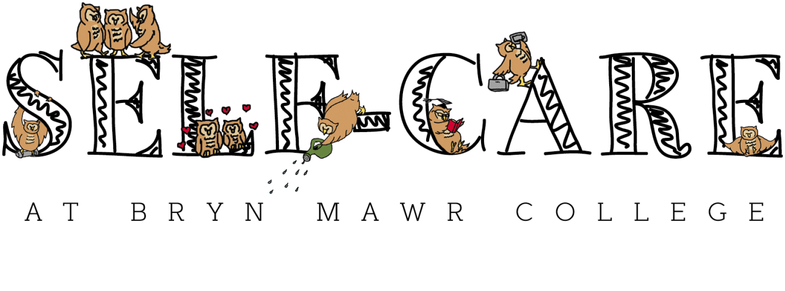

ms in communication data science
los angeles, ca

This banner was designed for the Self-Care @ BMC committee at Bryn Mawr College based off their existing logo.
I preserved the hand drawn quality and reinterpreted the existing elements of the logo for a more refined banner that not just conveyed but also highlighted the wholesome personalities of the illustrated owls. This refocused the imagery upon "self-care," and the text descriptors in the logo became extraneous to the banner.
This banner was printed large-scale and continues to feature at on-campus events hosted by the Self-Care @ BMC committee.